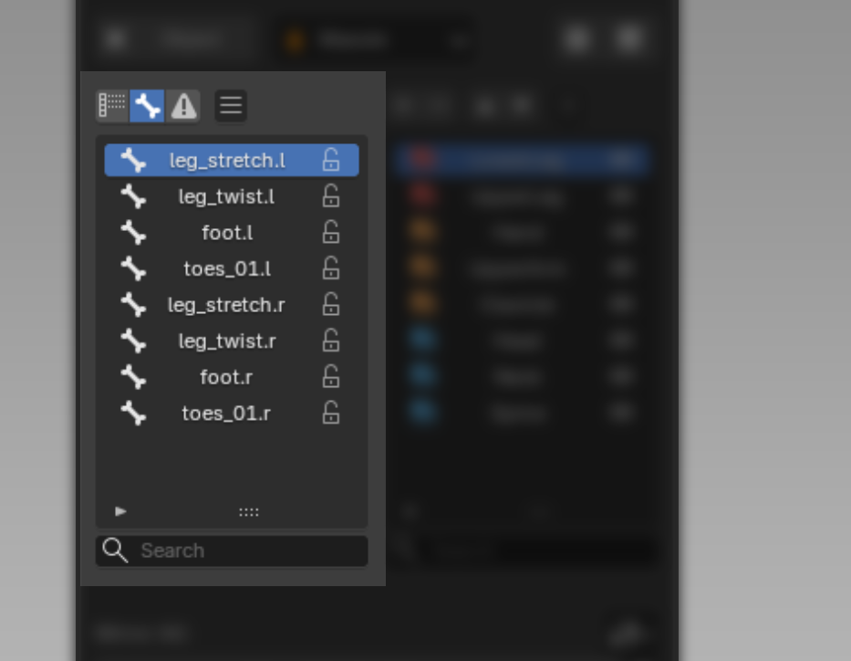
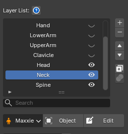

Bone List¶

Bone List
Shows the Deform Bone list, with a Lock/Unlock button for each bone to keep it from having its weight taken over while in Edit Weight Mode.
Filter
A single cycle button switches which bones are shown; clicking it steps between the two states below (the button lights up when Influence is active):
-
Show All shows every bone.
-
Influence shows only bones that carry weight, plus any orphaned bones (old vertex groups whose bone may have been deleted or renamed). See how to handle Orphaned Bone.
Clipboard Bone Weight
Clipboard the whole weight of the current Bone.
Notes
- While in Edit Weight Mode, you can select the bone to edit directly from this list, or by clicking it in the Viewport. How to select a Bone via the Viewport
- Supports
CtrlorShiftto select multiple entries at once. - The Search Bar supports both plain search and Wildcard Search, e.g.
arm*matches names starting with "arm",arm*_Lmatches names starting with "arm" and ending with "_L".
Layer List¶

The Layer List shows every Layer used in that model's Skin Weight.
You can delete, add, reorder, duplicate, rename, merge, and toggle each Layer on/off.
Each Layer has its own Weight Mask, which determines which area of the model that Layer affects.
You can edit a Layer's Mask while in weight-editing mode. Read more about Toggle Layer Mask Edit at Weight Apply Operation